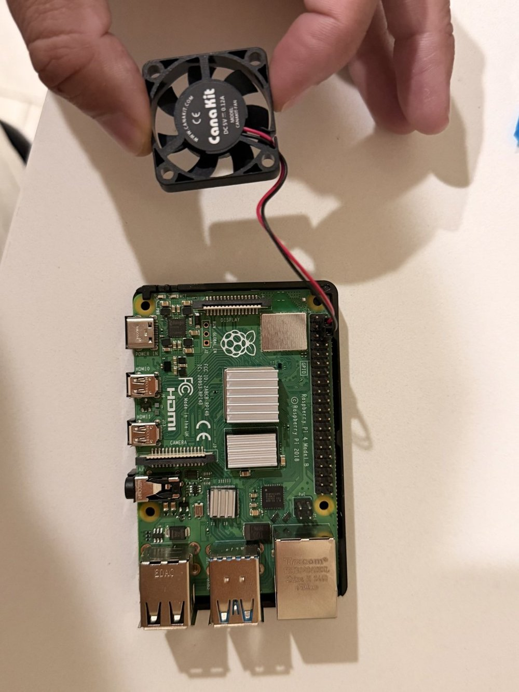

03 / PROJECT NOTES
Raspberry Pi homelab.
A practical infrastructure lab for Linux administration, private remote access, storage, self-hosted applications, and video workflows.
The goal
Build a small, useful home server and learn by operating it: persistent storage, private remote access, automation, monitoring, and troubleshooting.
Architecture
This deliberately abstract view omits addresses, private hostnames, ports, camera placement, and network topology.
Implementation
The original portfolio documents Raspberry Pi 4 assembly, ext4 disk mounting through fstab, Samba shares, Docker-hosted Home Assistant, a server health dashboard, Tailscale access, and remote desktop troubleshooting.
Additional hands-on work reported for this portfolio includes PoE camera infrastructure, recording and streaming, RTSP, FFmpeg, go2rtc, Home Assistant integrations, and systemd services. These workflows are described without publishing private configuration.
Challenges & technical decisions
Remote access with a private boundary
Tailscale provides access to services without publishing storage or administration interfaces directly to the internet.
Services that survive a restart
Persistent mounts, container management, and systemd service administration connect the initial setup with everyday operation and troubleshooting.
Video compatibility and resource limits
The related Ant Streams gateway provides a documented example of FFmpeg probing, compatibility processing, and bounded temporary storage on small hardware.
Results
A working personal learning environment documented in the original portfolio, with NAS access, home automation, monitoring, and remote administration. This demonstrates hands-on operations rather than an enterprise availability or performance claim.

More documentation, with privacy built in
Additional NAS, dashboard, and camera images will be added after checking every visible detail. No private addresses or hostnames are needed to tell the engineering story.